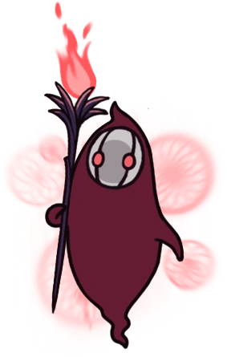

Caverne Nocive
Une région humide et couverte de champignons de toutes les sortes située près du centre d'Hallownest. En plus de cela, d'abondantes flaques d'acide caustiques sont présentent.
Carte
Lore
La population native de la Caverne Nocive est principalement composée du Clan Champignon et de la Tribu des Mantes.
Le Clan Champignon est un group de créatures fongiques qui ont un esprit partagé. Ils partagent une frontière avec le Nid-profond, dont les habitants étaient en conflit avec eux. Quand Le Roi Pâle est arrivé à Hallownest, ils ont accepté son règne en raison de leur ferme conviction que sa clairvoyance pourrait les protéger.
La Tribu des Mantes, par contre, qui vit dans la partie sud de la zone n'avait aucun amour pour le royaume d'Hallownest. . Les Mantes ont convenu d'une trêve où elles conserveraient souveraineté sur leur territoire, et en retour, elles garderaient les bêtes du Nid-profond à distance.
La Caverne Nocive était une région très importante pour les voyageurs. La voie du pèlerin, une route menant des Routes Oubliées à la Cité des Larmes, passait par les cavernes. La Station de la Reine reliait les Brumes Canyon et la Caverne Nocive aux Stations de Coléoptères, devenant ainsi une plaque tournante pour les voyageurs qui souhaitaient se rendre aux confins d'Hallownest.
Lorsque l'Infection s'est répandue dans le pays, le Clan Champignon a été infecté et a commencé à devenir agressif envers les étrangers. Bien que la Tribu des Mantes n'ait pas été touchée par l'Infection, elles ont conservé leur tradition d'attaquer quiconque ose s'approchait de leur village.
Connexions
La Caverne Nocive est reliée à ces zones :
Ennemis
-
Ambloom
Une créature fongique rampante et idiote. Son capuchon est recouvert d'une couche de piques trempées. Allongez-vous confortablement sur le ventre, ouvrez le gouffre qui vous sert de bouche et laissez ce morceau de viande savoureux marcher droit dans votre ventre.
-
Carcasse Fungifiée
La carapace vide d'un insecte, consumé par un champignon. Libère souvent des nuages épais de gaz mortel. Les insectes d'Hallownest sont tellement pitoyables. Ils ont eu beaucoup de chance d'avoir été infectés par des champignons toxiques, car cela augmente leurs chances de survie ! Ce sont vraiment des créatures complètement absurdes.
-
Bulling

Ballon fongique passif. Les gaz internes le font flotter. Enfant, il dérive les yeux fermés et l'esprit ouvert. Quand j'étais jeune, mes frères et sœurs et moi nous chassions les uns les autres dans le nid. Maintenant, je chasse seul.
-
Bullboon

Bulle fongique mature. Elle crache le gaz qu'elle a accumulé dans son corps sur les ennemis. Tellement rondes. Je n'ai jamais vu de créatures si rondes. Ce monde doit encore cacher des créatures incroyables quelque part. Je dois réussir à toutes les trouver !/p>
-
Ogre Fongique
Une énorme créature fongique. Attaque en crachant du venin corrosif et en heurtant les ennemis avec son corps. Ces énormes bestioles sont-elles des bêtes ou bien des champignons ? Pour le savoir, j'en ai coupé une en deux et j'ai regardé à l'intérieur. Malheureusement, je n'ai pas réussi à trouver la réponse à ma question dans ses entrailles molles et nauséabondes.
-
Guerrier Champignon
Une créature fongique. Attaque les intrus pour protéger sa progéniture. Quelque chose de vraiment étrange a dû se produire pour que ces champignons évoluent et acquièrent un cœur, un esprit et même un visage ! Cependant, cela signifie qu'ils ont peut pour leur vie, comme tous les autres êtres vivants.
-
Champiling
Jeune créature fongique. Passe la plupart de son temps ancré dans le sol, mais elle peut se déraciner et fuir en cas de danger. Ressemble à un champignon ordinaire jusqu'à ce que vous vous en approchiez. C'est à ce moment qu'il sort du sol et se met à courir à toute allure. C'est tellement amusant !
-
Sporg
Une créature qui détecte le moindre mouvement autour d'elle. Lance des spores explosives qui se dirigent vers leur cible. Si vous êtes habile, vous pouvez renvoyer leurs spores droites sur elles et les regarder périr par une force de destruction de leur propre fabrication. Il y a certainement une leçon à tirer de tout ça.
-
Guerrière Mante

Une créature appartenant à une fière tribu et férocement protectrice de son territoire. Attaque sauvagement avec ses pinces à lames avant. Si vous vous aventuez trop profondément dans les forêts de champignons, ces guerrières se mettront en travers de votre chemin. Que peuvent-elles bien protéger au plus profond de leur territoire ?
-
Jeune Mante
Une créature appartenant à une fière tribu et férocement protectrice de son territoire. Attaque sauvagement avec son abdomen pointu comme une aiguille. En grandissant, cette créature perd la capacité de voler. Le passage à l'âge adulte est souvent célébré, mais avec le temps qui passe, nous réalisons peu à peu ce que nous avons perdu.
-
Grimm Cauchemardesque
Esprit cauchemardesque terrifiant de la Troupe de Grimm. Dans le cadre du Rituel, il rassemble des flammes écarlates avec sa torche. Il abandonnera la flamme une fois vaincu. Dansez et mourez et vivez à jamais, Des voix silencieuses crient et chantent, Présentez-vous devant le cœur sombre de la Troupe, Brûlez le Roi des cauchemars.
Boss de la Zone
Hu l'Ancien
Hu l'Ancien est l'un des Guerrier des Rêves. Il était un sage voyageur qui cherchait à purifier de l'infection, les régions frontalières d'Hallownest. Il atteignit le Village des Mantes, mais son propre esprit infecté lui fit voir les Dames Mante et leur Tribu comme étant atteints par L’Infection. Les Mantes l'ont tué après qu'il les ait attaqués. Un mémorial a été érigé en son nom au-dessus des portes de la Cité des Larmes sur lequel reposent sa tunique et son collier perlé.
Dames Mante

Les Dames Mante sont trois soeurs qui dirigent la tribu des Mantes dans les profondeurs de la Caverne Nocive. Elles ont réussi à résister à l'Infection dans tout Hallownest, malgré l'exil de leur frère et de ses partisans, qui ont choisi d'accepter l'Infection de leur plein gré. Les Dames Mantes ont gardé les bêtes du Nid-profond confinées à leur territoire, tuant ceux qui s'introduiraient dans le village. Ce devoir faisait partie d'une trêve avec le royaume, maintenue même lorsque celui-ci tombait en ruines. Pourtant, les Dames Mante, comme le reste de leur tribu, restent de fières guerrières. Elles accordent le passage au Nid-profond à tous ceux qui les battent dans un défi équitable, dans une arène improvisée dans leur salle du trône.
Évènements
- Obtention de la Pince de mante religieuse
- Obtention d'un morceau de masque
- Station Coléoptère : Station de la Reine
- Rencontre du marchand Mangepatte
- Rencontre de Bretta
- Rencontre de Quirrel
- Rencontre de Cloth
- Rencontre d'Hornet
- Rencontre de Monsieur Champignon #1